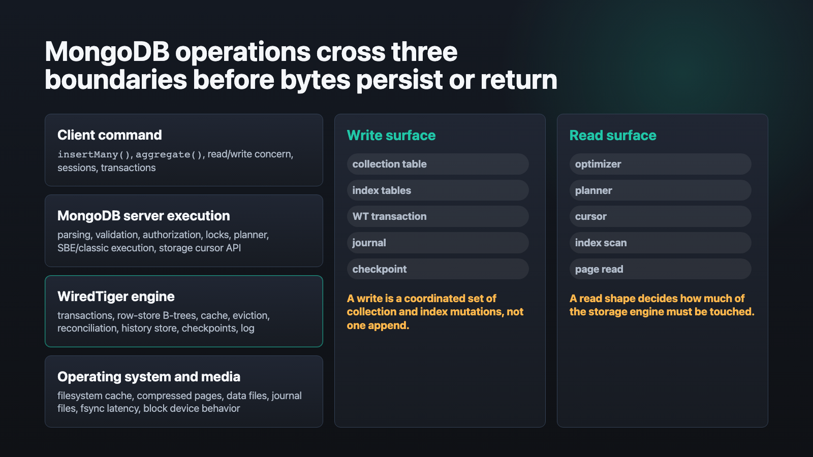
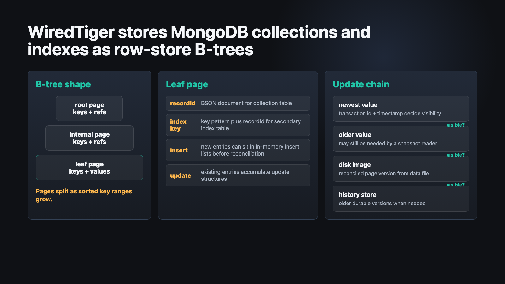
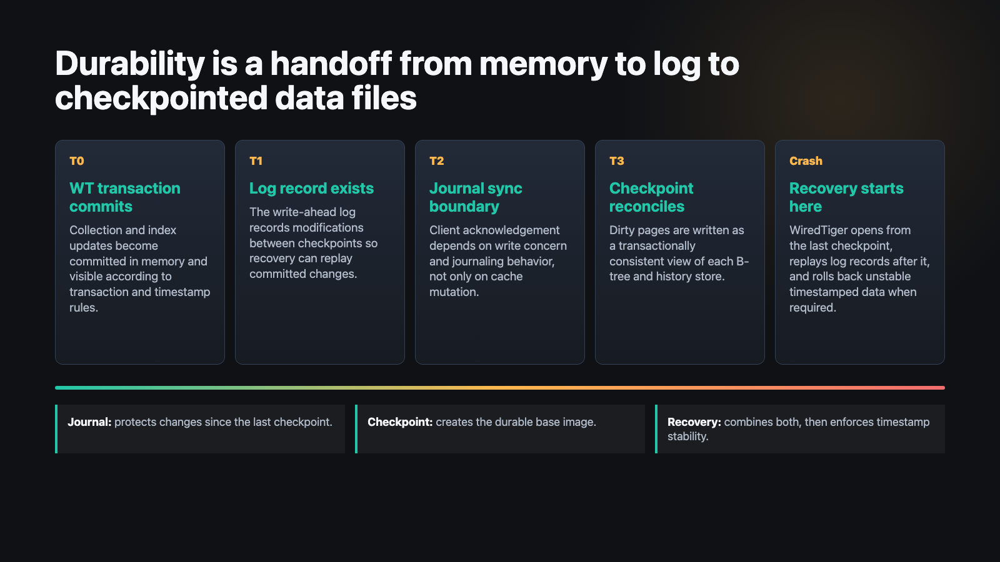
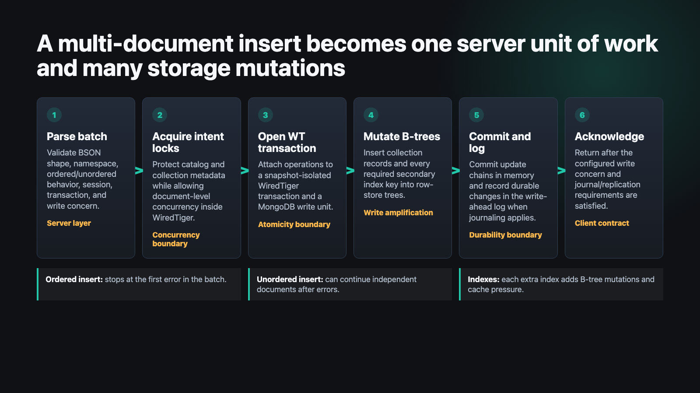
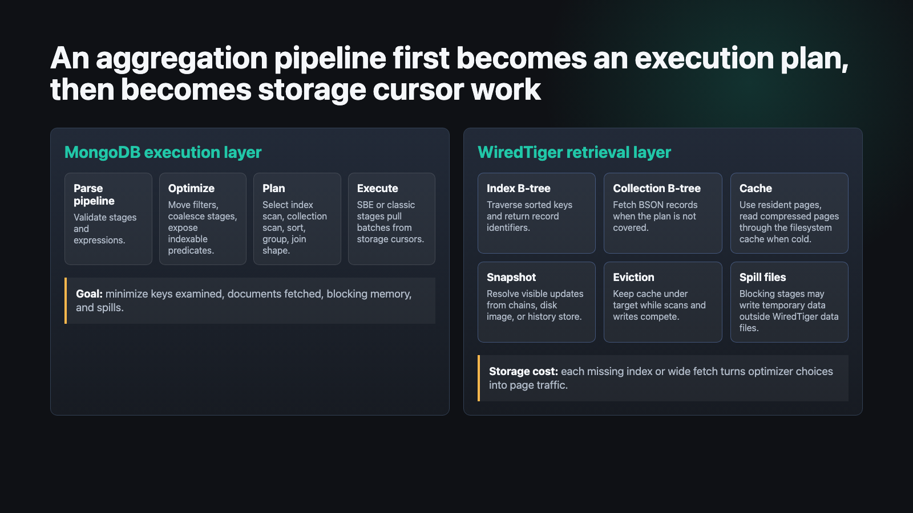
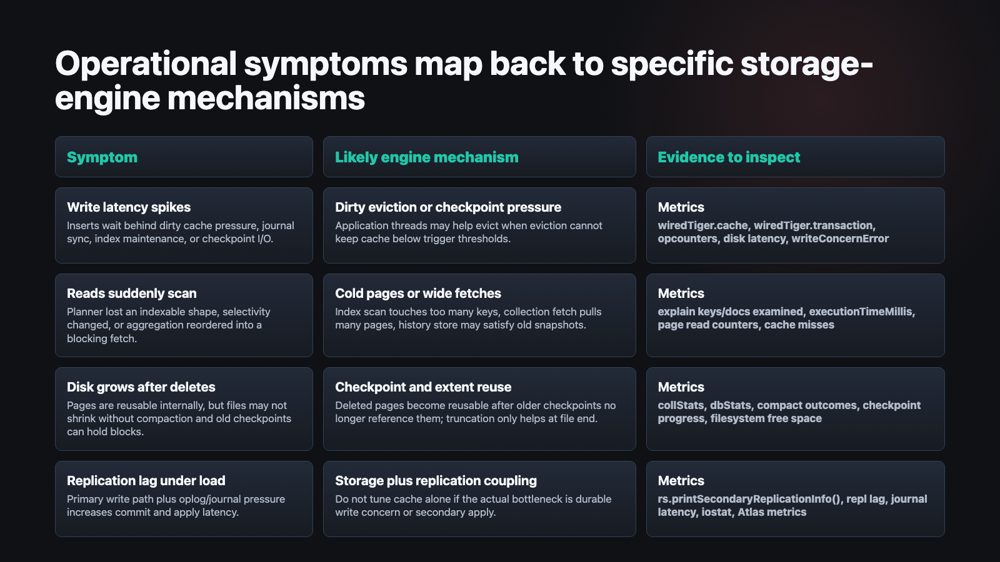

Database Internals
A deep dive into how MongoDB operations move through the server layer into WiredTiger B-trees, transactions, cache, eviction, journaling, checkpoints, and recovery.
85 minutes / 50 slides
Learning Goals
Explain B-trees, pages, update chains, timestamps, cache, eviction, reconciliation, journal, and checkpoint roles.
Map latency, cache pressure, disk growth, checkpoint stalls, and scan regressions back to engine mechanisms.
Predict how schema shape, index count, batching, transactions, and aggregation design change storage-engine work.
Through-Line
A multi-document insert into an orders collection with secondary indexes, durable write concern, and crash recovery implications.
An aggregation pipeline that filters, sorts, groups, and fetches documents through query planning and storage cursors.
The point is not memorizing every internal struct. It is seeing which layer owns which responsibility.
Stack Map

Mental Model
Boundary
| Concern | MongoDB server | WiredTiger |
|---|---|---|
| Command shape | CRUD, aggregation, transactions, sessions, read/write concern. | Storage cursors, transactions, timestamps, table handles. |
| Data model | Database, collection, document, index, catalog metadata. | Tables, row-store keys, pages, update chains, data files. |
| Query execution | Planner, SBE/classic execution, pipeline stages, document materialization. | Cursor traversal, page reads, visible-version resolution. |
| Durability contract | Write concern, journaling policy, replication acknowledgement. | Commit records, log flush, checkpoint, recovery. |
Tables
Keys are internal record identifiers. Values are BSON document bodies. Inserts add sorted keys to the collection's B-tree.
Each secondary index has its own sorted key space. Compound, multikey, unique, and partial rules affect key generation.
MongoDB tracks collection/index metadata above WiredTiger; WiredTiger metadata tracks files, checkpoints, and handles.
B-Trees

Row Store
Index range scans are natural B-tree walks. Equality scans narrow to a key range; range queries walk adjacent keys.
Inserts and updates target leaf pages. If pages exceed configured boundaries, the tree splits and grows.
Collection and index B-trees let query planning choose between direct record fetch, index traversal, or collection scan.
MVCC
Timestamps
Controls which timestamped updates a transaction can see. Snapshot reads need repeatable visibility.
Marks the point before which versions should be globally visible and no longer needed by readers.
Defines what can be checkpoint-durable; recovery rolls back updates newer than the stable boundary when required.
History Store
When an older version must survive beyond the in-memory update chain, reconciliation can write that version to the history store so snapshot readers still have a consistent view.
Long-running reads, pinned timestamps, and heavy updates can increase history retention, cache pressure, and recovery work.
Cache
| Layer | What lives there | Why it matters |
|---|---|---|
| WiredTiger cache | In-memory pages, update chains, insert lists, dirty content. | Primary pressure point for reads, writes, eviction, and checkpoint preparation. |
| Filesystem cache | On-disk page images, usually compressed as stored in data files. | Cold reads may still avoid physical disk if the OS cache is warm. |
| Application memory | Query stages, aggregation buffers, connections, drivers, process overhead. | Too much non-cache memory reduces what the OS can use for storage caching. |
Eviction
Reconciliation
Checkpoints
Checkpoint runs with a consistent view, coordinates B-tree traversal, block allocation, metadata, and history store checkpointing.
Before the critical checkpoint work, eviction is used to reduce dirty cache content and avoid writing everything in one burst.
On restart, WiredTiger begins from the most recent checkpoint and replays the log for committed changes after it.
Journal
Transaction modifications are collected and written as log records that recovery can replay.
WiredTiger uses LSNs to identify log record positions and checkpoint relationships.
Journal behavior intersects with MongoDB write concern, latency, filesystem semantics, and storage device behavior.
Durability

Persistence Example
db.orders.insertMany(
[
{
_id: ObjectId(),
customerId: "C-1842",
status: "created",
region: "ca-east",
totalCents: 4215,
createdAt: ISODate("2026-05-27T12:00:00Z"),
items: [{ sku: "A-42", qty: 2 }]
},
{ customerId: "C-1842", status: "paid", region: "ca-east", totalCents: 4215 }
],
{ ordered: true, writeConcern: { w: "majority", j: true } }
)Insert Path

Batch Semantics
ordered changes failure behavior, not storage fundamentals| Mode | Server behavior | Storage impact |
|---|---|---|
| Ordered | Stop processing after the first write error in the batch. | Successfully inserted earlier documents still performed collection and index mutations. |
| Unordered | Continue independent inserts after errors where possible. | Can improve throughput by avoiding strict sequence dependency, but still creates the same per-document storage work. |
| Transaction | All-or-nothing semantics across the transaction boundary. | More versions, locks, history retention, and commit coordination may accumulate before completion. |
Write Unit
_id, validate document constraints, and choose the collection record id.
Collection table mutation
Index Amplification
Build key strings, apply collations, expand array fields, check uniqueness, and compare keys in sorted order.
Each index B-tree has its own hot pages, splits, dirty content, and eviction candidates.
More dirty pages means more reconciliation, more checkpoint work, and more log volume.
Read-optimized indexing is also write amplification. That tradeoff is storage-engine real, not just planner-level.
Unique Indexes
MongoDB has to determine whether the generated unique key already exists or conflicts with another uncommitted operation.
The index B-tree must contain the key mapping to the inserted record id, and the transaction must preserve consistency with the collection table.
A unique secondary index is often the difference between append-like writes and contention-prone writes.
Multi-Document Transaction
Write Concern
| Layer | Question | Why latency changes |
|---|---|---|
| WiredTiger commit | Did the transaction commit inside the engine? | CPU, cache, page mutation, and logging work. |
| Journal | Does the configured acknowledgement require journal durability? | Log flush and filesystem/device sync path. |
| Replication | Does w require majority or named replica set acknowledgement? |
Network, secondary apply, oplog, and durable majority commit point. |
Crash Recovery
Retrieval Example
db.orders.aggregate([
{ $match: {
region: "ca-east",
status: { $in: ["paid", "shipped"] },
createdAt: { $gte: ISODate("2026-05-01") }
}},
{ $sort: { customerId: 1, createdAt: -1 } },
{ $group: {
_id: "$customerId",
revenue: { $sum: "$totalCents" },
lastOrderAt: { $first: "$createdAt" }
}},
{ $sort: { revenue: -1 } },
{ $limit: 50 }
], { allowDiskUse: true })Aggregation Path

Optimizer
Filters can be split and moved before projections when dependencies allow, exposing earlier index use.
Adjacent stages such as sort and limit can combine, reducing intermediate work and memory.
Some stages can run in the slot-based engine when preceding stages are also compatible.
Planner
| Plan shape | Storage path | Common smell |
|---|---|---|
IXSCAN covered |
Index B-tree scan returns all required fields from keys. | Usually efficient; watch key count and sort direction. |
IXSCAN + fetch |
Index scan returns record ids, then collection B-tree fetches full BSON. | Many documents fetched means page traffic and cache churn. |
COLLSCAN |
Collection B-tree scan walks record ranges without selective index narrowing. | Often catastrophic when working set exceeds cache. |
Covered Query
db.orders.createIndex({
region: 1,
status: 1,
createdAt: -1,
customerId: 1,
totalCents: 1
})If the pipeline can be satisfied from index keys until a blocking stage, WiredTiger touches fewer collection pages. The tradeoff is a wider and more expensive index to maintain.
Blocking Stages
$sort and $group are memory-shaping stagesIf index order matches the requested sort after predicates, the engine can stream results in order.
If order is not available from an index, MongoDB must buffer and sort, with possible disk spill.
$group aggregates state by key; cardinality drives memory, spill, and downstream latency.
Spills
Execution stages write temporary data when blocking memory requirements exceed limits and disk use is allowed.
Storage-engine pages are reconciled or discarded to keep the internal cache within limits.
Both can show up as disk I/O, but the remediation is different: plan shape versus cache/write pressure.
Snapshot Reads
Concurrency
MongoDB uses collection/database lock modes to protect metadata and coordinate operations.
WiredTiger detects write conflicts and visibility conflicts at the storage level; callers retry where appropriate.
Prepared transactions can make readers wait or retry because updates are neither normally visible nor rolled back.
Operations

Metrics
serverStatus().wiredTiger is the first engine readoutExplain
explain() tells you how much storage work the plan requestedHow much index B-tree work the plan performed.
How many collection records were fetched after index traversal or scan.
For supported stages, execution stats expose whether data spilled and how much temporary data was written.
Profiler
| Instrument | Best for | Blind spot |
|---|---|---|
| Profiler / slow query log | Operation shape, keys/docs examined, locks, yields, plan summaries. | Does not fully explain storage-device latency. |
serverStatus |
Cache, eviction, checkpoint, transaction, lock counters. | Counters require rates and correlation with workload windows. |
| OS / Atlas metrics | Disk latency, queue depth, memory pressure, CPU, filesystem behavior. | Cannot distinguish bad query shape from storage pressure without MongoDB metrics. |
Application Impact
Growing documents can rewrite larger values and create page churn; bounded document shapes are easier for cache locality.
Multikey indexes can multiply index keys per document, increasing insert cost and index B-tree size.
Monotonic or low-cardinality patterns can concentrate writes or scans in narrow regions of a tree.
Application Impact
Application Impact
Fewer network round trips and fewer command-level overheads. More chance for throughput-oriented scheduling.
Large batches can concentrate dirty cache growth, transaction memory, index hot spots, and journal bursts.
Batch for throughput, but observe p95 latency, eviction pressure, journal latency, and secondary apply lag.
Application Impact
$matchExpose selective predicates before expensive transformations so indexes can narrow B-tree traversal.
Design compound indexes to support the filter and sort prefix where the pipeline needs ordered streams.
Carry only fields needed by later stages; covered or narrow fetches reduce collection page traffic.
Tuning
| Knob | When it helps | Risk |
|---|---|---|
| WiredTiger cache size | Workload truly needs a different split between engine cache and OS/application memory. | Too large can starve filesystem cache and other processes; too small increases eviction pressure. |
| Compression | Storage and I/O savings matter more than extra CPU. | Can add CPU cost and does not reduce in-cache collection data the same way it reduces disk bytes. |
| Compaction | You need to return reusable internal space to the filesystem after major deletes. | Operationally expensive; not a replacement for data lifecycle design. |
Failure Modes
Checklist
Recap
Insert work is collection B-tree mutation plus index B-tree mutation plus transaction visibility plus durability contract.
Aggregation work is optimizer/planner shape plus storage cursor traversal plus cache/version resolution plus possible stage spill.
Most symptoms are one of three pressures: too many pages touched, too many pages dirty, or too many versions retained.
Takeaways
References
serverStatusdb.collection.insertMany()